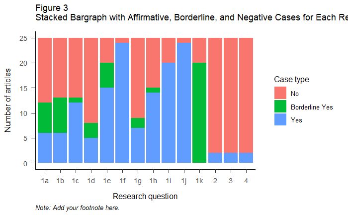
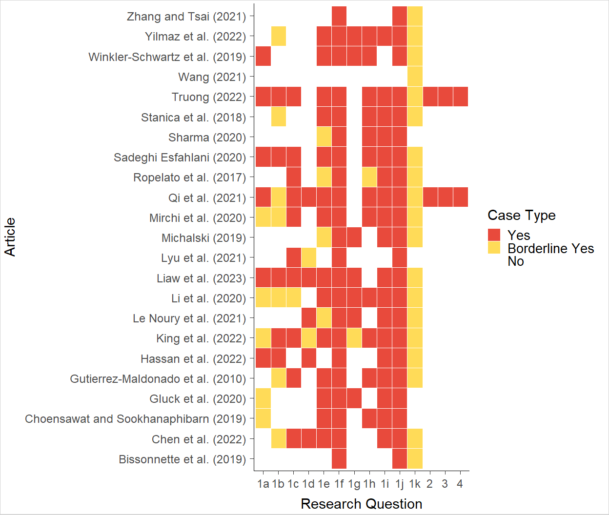

5 Results
The results of this literature review can be viewed in the stacked bar graph and the heat map below. Figure 2 provides a stacked bar graph with research questions on the x-axis and the number of articles on the y-axis. Blue bars indicate the number of articles that contain affirmative answers for each research question. Green bars indicate the number of articles that are borderline cases, while red bars indicate the number of articles that do not answer each research question. Note that the stacked bars do not overlap. The desired outcome is for the bar to be mostly blue, while the least desired outcome is for the bar to be mostly red. A heatmap is also provided to help see patterns for individual articles or research questions.


5.1 1. Are the current VR and AI training programs utilizing best practices from the science of training?
The top best practices implemented in AI-VR training studies are features that enable trainees to use the same cognitive processes they would in the transfer environment (1f), features that boost psychological fidelity (1j), and the use of valid learning/outcome taxonomies (1k). The least implemented are learning objectives (1a), self-efficacy boosts (1b), increases in engagement and interest (1d), and progress monitoring (1g). The sub-sections below briefly analyze each research question.
5.2 1a. Are learning objectives created and clarified to the reader?
In total, 24% of articles clearly communicated a condition, behavior, and criterion when describing study goals. Hassan et al. (2022) and Winkler-Schwartz et al. (2019) provide clear learning objectives, while 52% of studies did not.
5.3 1b. Is the training delivered in a way that builds trainees’ belief in their ability to learn and display trained skills (self-efficacy)?
Only 24% of studies had design features that could enhance self-efficacy. A significant number of studies (48%) did not mention self-efficacy or confidence-building measures at all.
5.4 1c. Does the training encourage trainees to participate in training to learn rather than to appear capable (promotes a learning orientation)?
In total, 48% percent of studies successfully fostered a learning orientation, often through AI-guided learning or adjustments based on perceived learning outcomes. However, some studies emphasized performance orientation instead.
5.5 1d. Does the training engage trainees and build their interest?
A total of 20% of studies measured engagement or interest levels, while 12% mentioned it as a design focus without measuring it. 68% of studies did not assess engagement at all.
5.6 1e. Does the training utilize a valid training strategy and design? This involves providing information, giving demonstrations of good and bad behaviors, allowing opportunities to practice, and providing meaningful feedback.
60% of studies had a valid training design that incorporated information, practice opportunities, and feedback. Borderline cases lacked important elements like feedback mechanisms.
5.7 1f. Does the training allow trainees to use the same cognitive processes that they will have to in the environment this learning should transfer to?
96% of articles recreated real-world scenarios, allowing trainees to engage in the same cognitive processes they would use in their actual environments.
5.8 1g. Does the training keep trainees’ attention by allowing trainees to monitor their progress toward goals?
Only 28% of studies allowed trainees to monitor their progress, often through live scoreboards or success screens. 64% of articles lacked elements for monitoring progress.
5.9 1h. Does the training encourage trainees to make errors?
60% of studies encouraged errors, often through repeated trial opportunities and supervised learning approaches. Some studies implied error encouragement but lacked detailed information.[1]
5.10 1i. Does the training provide sufficient structure to trainees when allowing them to make decisions about their learning experience?
80% of studies enabled trainees to make decisions about their learning, with AI providing personalized learning paths. The concept of “immersive control” emerged as a new form of learner control in AI-VR environments.
5.11 1j. Does the training simulation increase psychological fidelity (e.g. job-relevant, technology used fits the task)?
96% of training programs boosted psychological fidelity by using job-relevant simulations and technology that fit the task.
5.12 1k. Does the training use established learning / outcome taxonomies (e.g. affective, cognitive, and/or behavioral indicators)?
Most research articles measured variables using elements from established learning / outcome taxonomies (80%). However, 0 studies reference or demonstrate the utilization of any learning / outcome taxonomies. For this reason, these cases were marked at borderline. Table 3 shows a list of evaluation methods used in each study. Based on the table, behavior / skill-based learning outcomes were the most tested. This falls in line with previous theories surrounding VR training (Howard et al., 2021), which state that VR is well-suited to teach skill-outcomes due to its ability to allow trainees to practice by doing.
5.13 2. Are current studies on AI-enhanced VR training programs utilizing a proper control group?
Most studies did not utilize a proper control group to test the incremental effects that AI brings to VR training technologies (92%). Surprisingly, only two of the mentioned studies utilized a proper control group. Qi et al. (2021) and Truong et al. (2022) are the only studies that implement a “VR-only” comparison group. For more information on control groups, see Table 4.
5.14 3. Do current studies on AI-enhanced VR training programs have a sufficient number of people to make inferences about their effectiveness?
While many studies had adequate sample sizes, they did not meet the prerequisite of comparing AI-VR to “VR-only” trainings. For articles that had adequate sample sizes but did not utilize a proper control group, providing affirmative responses to this question could create misrepresentations in figures. This is because the purpose of this research question is to add substance to the preliminary results of the effects of AI on VR training. For this reason, it was decided to code articles that did not compare AI-VR to VR as “No” for this research question even if their studies included adequate sample sizes.
5.15 4. What are the preliminary findings: Does adding AI to VR training result in a better experience for the trainee, greater learning, or better on the job performance than regular VR training?
Most studies do not compare AI-VR to VR, thus making preliminary findings scarce and inconclusive. However, of the articles that do compare AI-VR to VR training programs, AI was found to significantly enhance training outcomes. Qi et al. (2021) found that AI had a moderate effect on performance. Truong et al. (2022) demonstrated that AI doubles the log-odds of passing a trial, indicating improved success rates with AI integration in VR training.